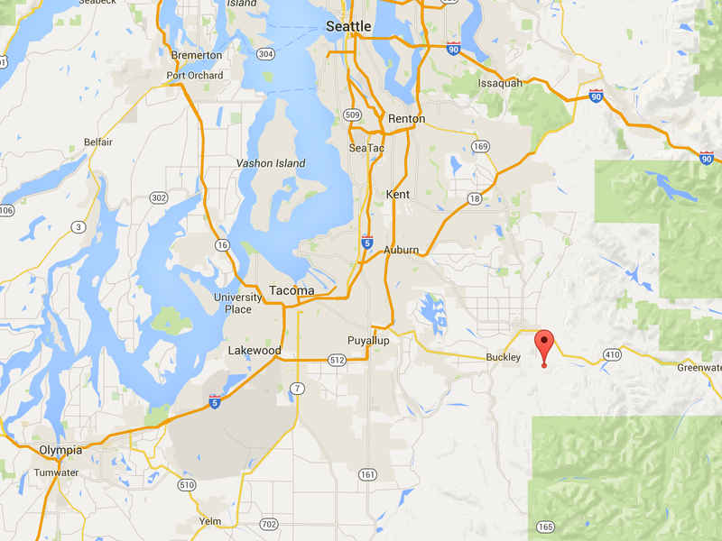

No-Host Picnic
Join us for a low-key picnic this August 29th, 2015 at the Mud Mountain Dam Recreational Area (the Cayuse Picnic Shelter). Spread the word! Download the flier with detailed directions and picnic information.
Download the Flier40th-year Reunion
See the Photos!“Applause…for having the best reunion ever! Compliments all evening, laughter, people still wanting to stay at 12:30…I still have a smile on my face”
—Sherri Lord Smith